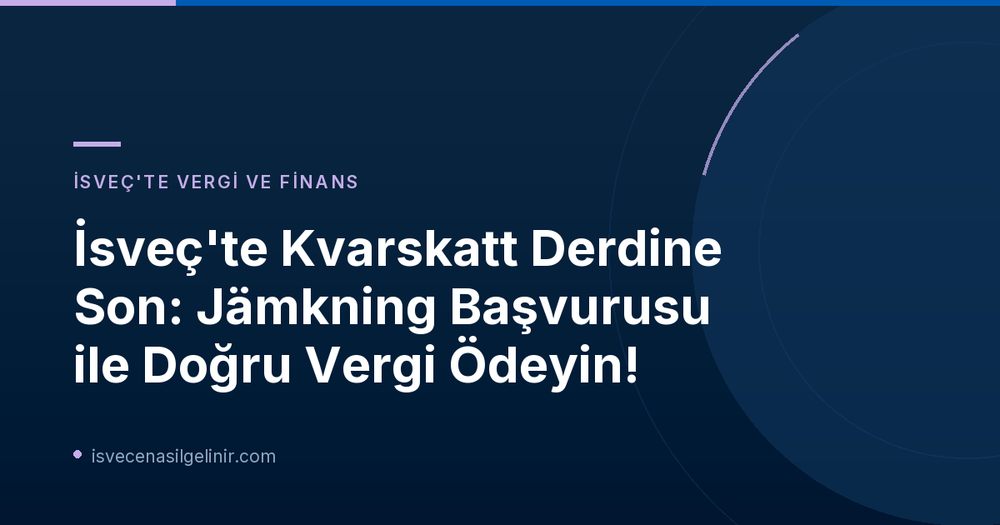

İsveç'te Kvarskatt Nedir ve Neden Ortaya Çıkar?
İsveç vergi sisteminde "kvarskatt", yıl içinde ödenmesi gerekenden daha az vergi kesintisi yapıldığında ortaya çıkan ve vergi beyannamesi sonrası ödenmesi gereken ek vergi anlamına gelir. Bu durum genellikle, gelirinizi sağlayan farklı kurumların (işveren, emeklilik fonu vb.) doğru vergi oranını uygulamakta zorlanmasından kaynaklanır. Her kurum, sizin toplam gelirinizi bilmediği için kendi payına düşen kesintiyi yaparken, yıl sonunda tüm gelirleriniz toplandığında eksik vergi ödediğiniz ortaya çıkabilir. Özellikle aşağıdaki durumlarda kvarskatt riski artar:
- Birden fazla işverenden veya emeklilik fonundan gelir elde edenler.
- Emekli olup aynı zamanda çalışmaya devam edenler.
- Yıl içinde gelir durumunda önemli değişiklikler olanlar (iş değişikliği, maaş artışı vb.).
Jämkning (Vergi Düzenlemesi) Nedir ve Nasıl Çalışır?
"Jämkning", Skatteverket'e (İsveç Vergi Dairesi) yapılan bir başvurudur. Bu başvuru ile, tüm gelir kaynaklarınız ve düşülecek giderleriniz dikkate alınarak yıl boyunca maaşınızdan veya emekli maaşınızdan doğru miktarda vergi kesintisi yapılmasını sağlarsınız. Amacı, yıl sonunda sürpriz bir kvarskatt faturasıyla karşılaşmanızı önlemek veya düzenli olarak vergi iadesi almak yerine yıl boyunca daha az vergi ödemenizi sağlamaktır.
Jämkning'in Temel Faydaları:
- Kvarskatt ödeme zorunluluğunu ortadan kaldırır.
- Yıl boyunca maliyetlerinizi daha iyi yönetmenizi sağlar.
- Yüksek vergi iadesi beklemek yerine, yıl içinde daha düşük vergi kesintisi ile daha fazla net maaş almanızı sağlar (özellikle yüksek faiz indirimleri olanlar için).
Kimler Jämkning Başvurusu Yapmalı?
Emekliler ve Birden Fazla Gelir Kaynağı Olanlar İçin Kritik Önemi
Skatteverket, kvarskatt ödeyenlerin önemli bir kısmının yeni emekliler olduğunu belirtiyor. Bunun en büyük nedeni, emeklilerin genellikle birden fazla kurumdan emekli maaşı almasıdır. Her bir ödeyici, diğer gelir kaynaklarınız hakkında bilgi sahibi olmadığı için, tek başına doğru vergi kesintisini yapmakta zorlanır. Sonuç olarak, tüm gelirler birleştiğinde vergi diliminiz yükselebilir ve yıl sonunda ek vergi ödemeniz gerekebilir. Emekli olup aktif olarak çalışmaya devam eden kişiler de bu durumdan etkilenir.
Yüksek Faiz İndirimleri Olanlar ve Sürekli Vergi İadesi Bekleyenler
Eğer yüksek faiz indirimleriniz (ränteavdrag) varsa veya genellikle her yıl vergi iadesi alıyorsanız, jämkning sizin için de faydalı olabilir. Jämkning sayesinde, bu indirimler yıl boyunca vergi kesintilerinize yansıtılır ve her ay daha az vergi ödersiniz. Bu, vergi iadesi beklemek yerine paranın yıl içinde cebinizde kalmasını sağlar.
Jämkning Başvurusu Nasıl Yapılır?
Kvarskattan kaçınmak veya doğru vergiyi ödemek için iki ana yöntem bulunmaktadır:
- Maaş/Emekli Maaşı Sağlayıcınızdan Ek Vergi Kesintisi Talep Edin: Maaş veya emekli maaşınızı ödeyen kurumdan, normalden daha fazla vergi kesintisi yapmasını isteyebilirsiniz. Bu basit bir yöntem olabilir, ancak tam olarak doğru miktarı belirlemek zor olabilir.
- Skatteverket'e Jämkning Başvurusu Yapın: En doğru ve güvenilir yöntem, doğrudan Skatteverket'e jämkning başvurusu yapmaktır. Bu başvuruyu Skatteverket'in web sitesindeki e-hizmet üzerinden kolayca gerçekleştirebilirsiniz. Başvurunuzda tüm gelirlerinizi ve varsa düşülecek giderlerinizi belirtmelisiniz. Sistem, sizin için yıl boyunca doğru vergi oranını hesaplayacak ve Skatteverket bu bilgiyi ilgili ödeme yapan kurumlara iletecektir.
2027 Yılı İçin Jämkning Başvuru Süresi ve Son Tarih
Önemli Duyuru: Jämkning Başvuru Son Tarihi!
Skatteverket'in bildirdiğine göre, jämkning başvurunuzun 1 Ocak 2027 tarihinden itibaren tüm 2027 yılı için geçerli olması amacıyla son başvuru tarihi 8 Kasım olarak belirlenmiştir. Bu tarihi kaçırmamanız, yıl içinde doğru vergi kesintisi yapılmasını ve kvarskatt riskini ortadan kaldırmanızı sağlayacaktır. Unutmayın, İsveç vergi sistemi ve yasal süreçleri hakkında daha fazla bilgiye sahip olmak için sverigemedborgarskapsprov.com adresini ziyaret edebilirsiniz.
Skatteverket Uzmanından Önemli Uyarılar
Skatteverket deklarasyon uzmanı Johan Schauman, konuyla ilgili şu açıklamayı yapıyor: "Farklı faktörler, ödemeniz gereken vergiyi etkiler. Jämkning başvurunuza her türlü gelir ve gideri dahil edebilirsiniz; ancak en önemlisi, jämkning maaş ve emekli maaşı ödemelerinizde çok az vergi kesilmesini önlemenin en iyi yoludur." Bu açıklama, kişiye özel durumların vergi hesaplamalarında ne kadar önemli olduğunu bir kez daha vurguluyor.
Faydalı Skatteverket E-Hizmetleri ve Bağlantıları
Skatteverket, jämkning başvurusu ve vergi hesaplamaları için çeşitli e-hizmetler sunmaktadır. Aşağıdaki bağlantıları kullanarak ilgili sayfalara ulaşabilir ve işlemlerinizi kolayca yapabilirsiniz:
| E-Hizmet Adı (İsveççe) | Açıklama (Türkçe) | Bağlantı |
|---|---|---|
| Jämkning - betala rätt skatt från början | Başlangıçtan itibaren doğru vergiyi ödemek için jämkning başvurusu | Skatteverket Sayfası |
| Jämkning för dig som är pensionär | Emekliler için jämkning başvurusu | Skatteverket Sayfası |
| Räkna ut din skatt | Verginizi hesaplamak için araç | Skatteverket Sayfası |
| Undvik kvarskatt | Kvarskattan nasıl kaçınılacağına dair genel bilgiler | Skatteverket Sayfası |
| Regelbunden skatteåterbäring | Düzenli vergi iadesi hakkında bilgiler | Skatteverket Sayfası |
Referanslar:
İsveç'te Vergi Yükünüzü Hafifletin!
Kvarskatt sürpriziyle karşılaşmamak veya yıl boyunca doğru vergi ödemek için Skatteverket'in sunduğu Jämkning (vergi düzenlemesi) fırsatını kaçırmayın. Özellikle 8 Kasım son başvuru tarihini unutmayın!